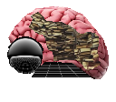
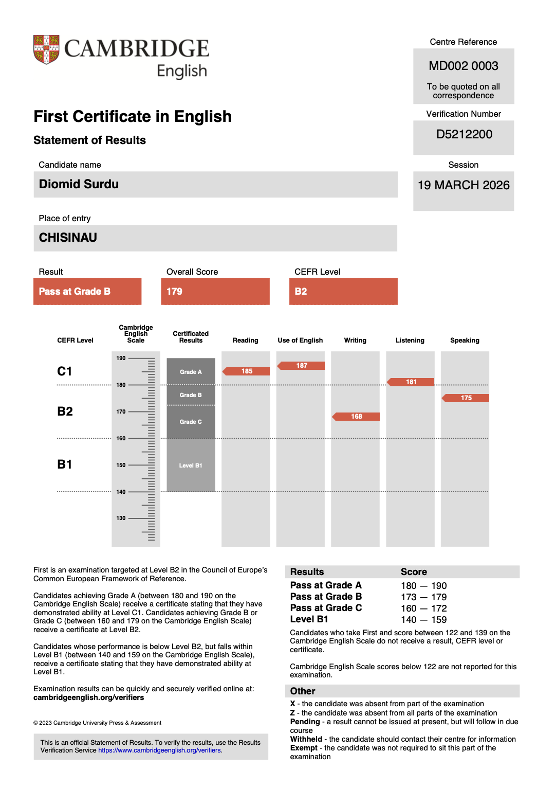
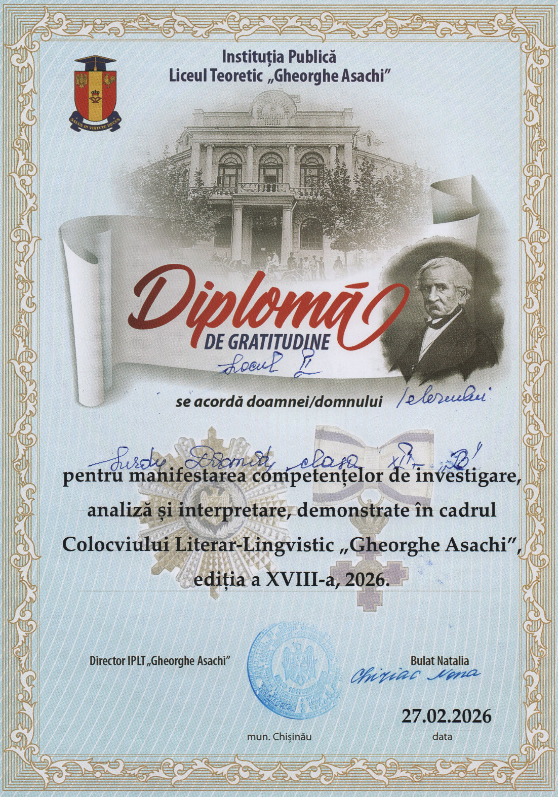
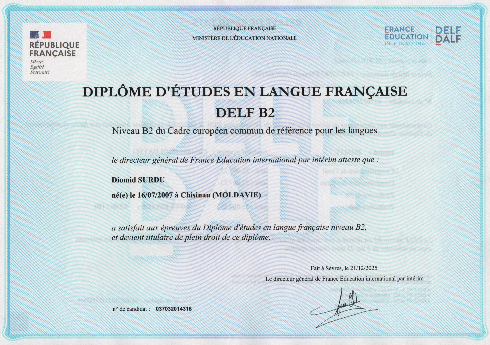
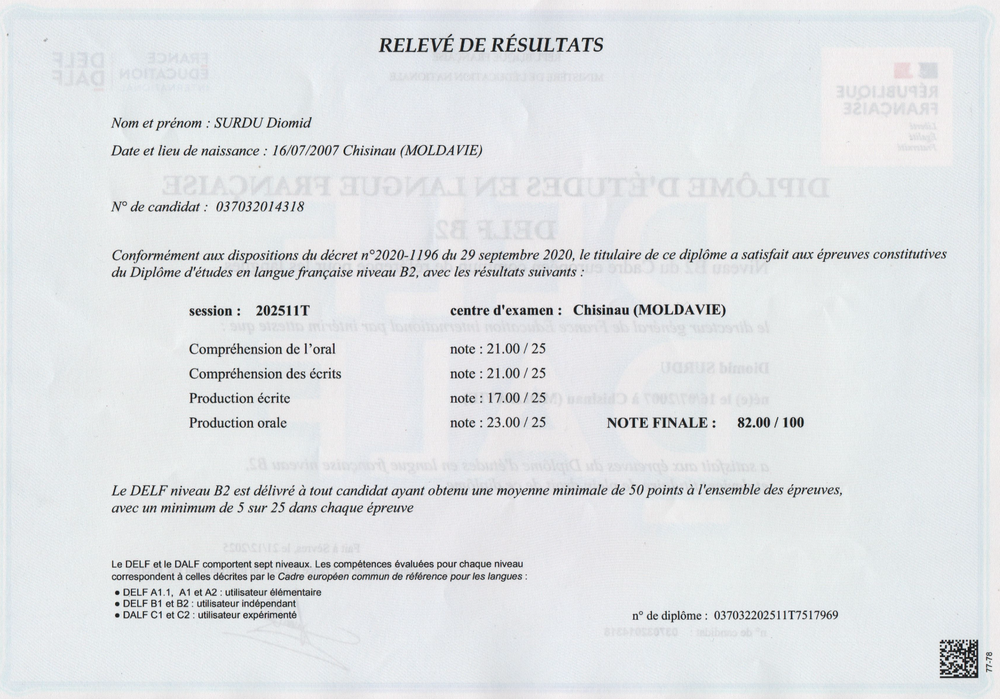
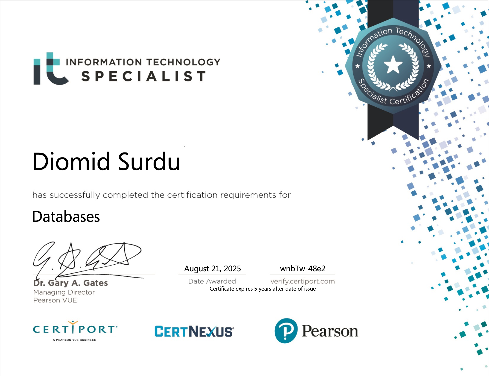
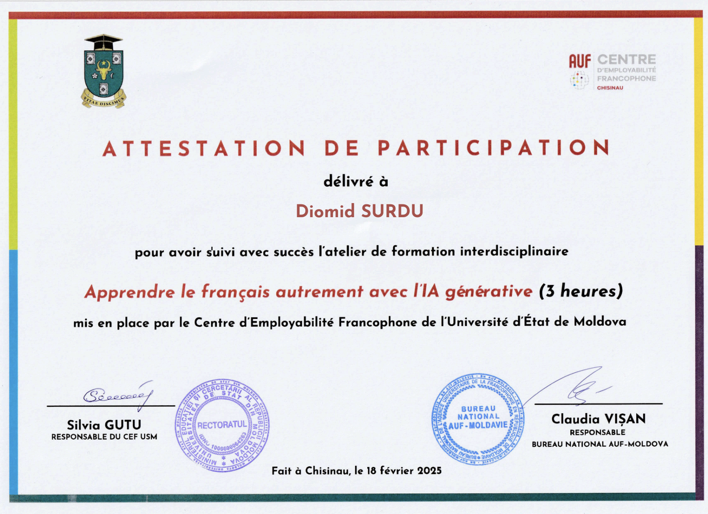
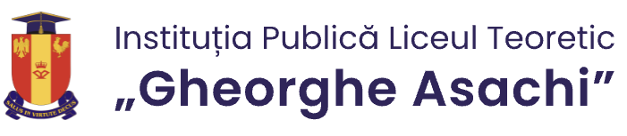
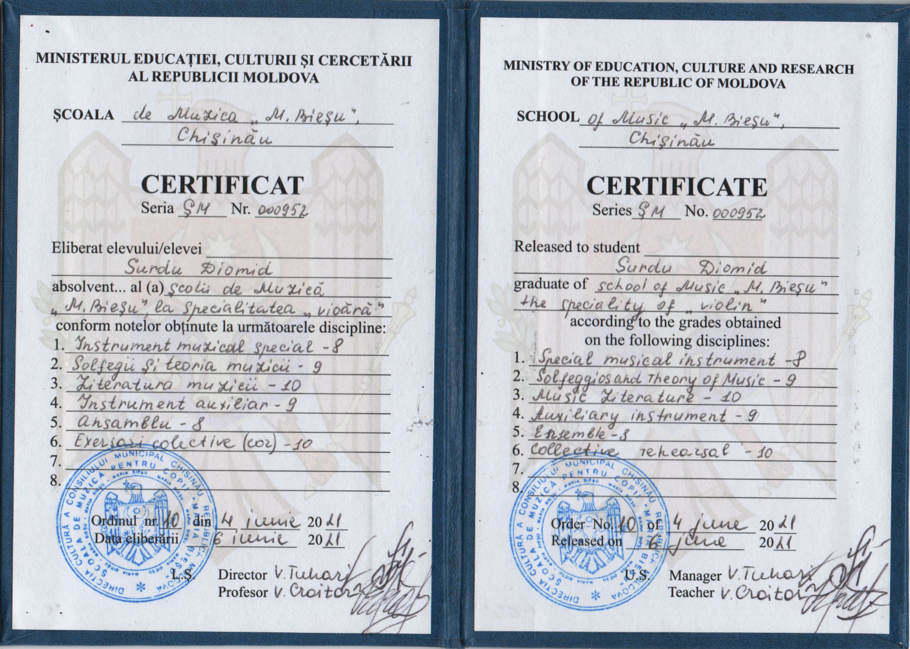

Maths d'égal à l'égal
5 Mars - Présent, 2026
Volonariat
Site du programme: www.ajutauncoleg.md
Score: 179/190, B2 Grade B

Lauréat de la seconde place.

Score: 82/100


Certification IT Specialist

Certification IT Specialist
Certification IT Specialist
Certification IT Specialist

Cycle terminal au lycée (filière scientifique), IPLT Gheorghe Asachi.
L’horizon s’élargit par le prisme de la science.

Élève en cycle collégial à l'IPLT Gheorghe Asachi.
Études de violon et de piano à l'École de Musique Maria Bieșu.

Élève en cycle élémentaire à l'IPLT Gheorghe Asachi.
Premiers pas, grandes ambitions. À suivre...